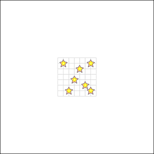
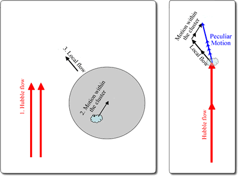

The ‘Hubble flow’ describes the motion of galaxies due solely to the expansion of the Universe.
The idea of the expanding Universe was first put forward by Edwin Hubble in 1929, after observing a correlation between the redshifts of galaxies and their distances measured using the period-luminosity relationship for Cepheid variable stars. Hubble found that all galaxies were moving away from us, and that the velocity of their recession was proportional to their distance from us. This observation is equally valid for observers in other galaxies (e.g. an observer in the Andromeda galaxy would see the Milky Way and every other galaxy in the Universe moving away from them), and is described by the Hubble Law:
Recession Velocity = H0 x D
where H0 is the Hubble constant (approx 70 km/sec/Mpc) and D is the distance to the galaxy in question (in Mpc).

In practice, the motions of galaxies are influenced by more than just the Hubble flow. The net motions of galaxies are comprised of the Hubble flow, the local flow, and the motion of the galaxy within its cluster and/or group environment. These deviations from the pure Hubble flow are referred to as peculiar motions.